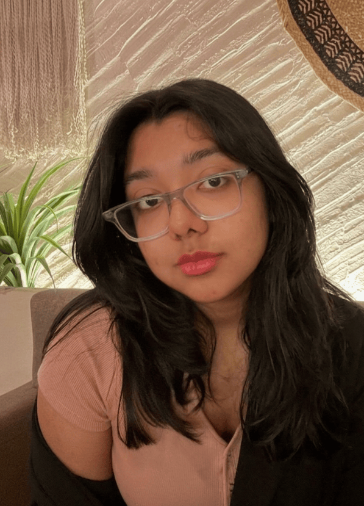

Hello! I'm Yashaswi Priya. I am a first year Dual Degree student studying Computer Science and Computational Linguistics at IIIT Hyderabad. I decided to study computer science, not just for the coding and problem solving aspect, but also due to my love for mathematics. I opted for CLD (Btech in Computer Science and Ms in Computational Linguistics) as my top preference, because I was fascinated by what IIITH was achieving in the field of speech processing. I'm a classically trained Bharatnatyam dancer, and the experience has taught me discipline and perseverance. I enjoy reading books (mostly modern-classics or crime thrillers) and painting in my free time. I am a huge animal lover and absolutely adore dogs, especially the campus canines. I work actively in the Design Teams of different clubs (Felicity(the college fest), The Dance Crew, The Gaming Club, Cyclorama and The Art Society) and am an active member of the Campus Canine-Management Cell.
Started learning Bharatnatyam and Tennis. Found my love for Fine Arts and Reading.
97.8% in 10th Boards. Developed a passion for History and Archaeology.
Rank: 8k JEE Mains (99.475 percentile) and 13k JEE Advance. 95.6% in 12th Boards.
Rank: 24 UGEE. CLD at IIITH. 9.72 SGPA in Sem1
9.32 CGPA at IIITH. Using college as an opportunity to diversify my skillset, particularly in Design.